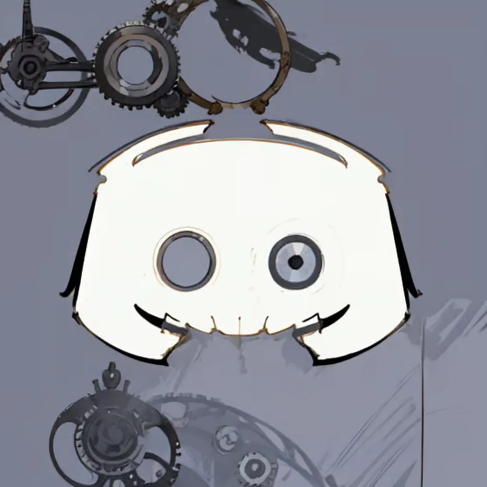
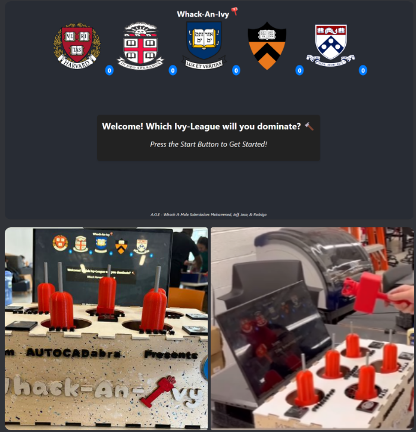

Freelance Discord Bot Developer | Guess The Number
As a Freelance Discord Bot Developer, I created and maintained countless bots. The most
memorable one, the "Guess The Number" bot, which became my largest and most successful
project. This bot reached an impressive 12,000,000 million users across
over 13,000 servers,
demonstrating its widespread popularity and reliability.
The "Guess The Number" bot allowed users to engage in guessing games within their
Discord servers. It managed the usage of thousands of game instances simultaneously,
ensuring smooth and efficient operation. To handle this, I utilized MongoDB for
persistent data storage and Redis caching to optimize data retrieval, enabling the bot
to manage and sort through a massive volume of messages seamlessly.
The bot's infrastructure was designed to efficiently process and record game data,
ensuring a high-performance experience for all users.

Discord Metric System
I developed a "Discord Metric System," an advanced application designed for real-time
metrics collection and visualization, utilizing Discord's API and the
MERN stack. This
project involved creating a comprehensive system to handle and display metrics data from
Discord servers efficiently.
Key features of this project include:
- Real-Time Metrics Collection: Engineered the application to collect
real-time data
from Discord servers, ensuring timely and accurate metrics.
- Multi-Layered Data Processing and Caching Pipeline: Implemented a
streamlined data
processing pipeline using Redis, local in-memory cache, and MongoDB. This setup
significantly increased read/write speeds by over 90%, achieving response times of
1-10ms, even under high throughput conditions.
- RESTful APIs: Developed robust RESTful APIs with Express.js to
facilitate seamless
access to real-time metrics data. This ensured smooth updates and accurate
visualization of metrics on the ReactJS-based website.
The project demonstrates my ability to create scalable, high-performance systems that
can manage and process large volumes of data efficiently, providing valuable insights
through real-time analytics.

Whack-A-Mole
I developed the software for a "Whack-A-Mole" game that combines real-time interaction
with physical
hardware and an engaging user interface, showcasing my skills in both hardware
integration and full-stack development at my universitys engineering showcase.
Key features of this project include:
- Real-Time Game Interface: Designed a dynamic, responsive game
interface synchronized
with physical sensors and motors connected to an Arduino board.
- WebSocket Connections: Leveraged Node.js and Express.js to
establish WebSocket
connections, managing bidirectional data transmission between the physical arduino
setup and the React.js frontend.
- Responsive User Interface: Implemented a responsive user interface
using React.js,
synchronized with real-time game events via a Socket.IO server. This setup enabled
dynamic score tracking, timer updates, and music playback.
This project demonstrates my ability to integrate hardware with software, creating a
seamless and interactive user experience.